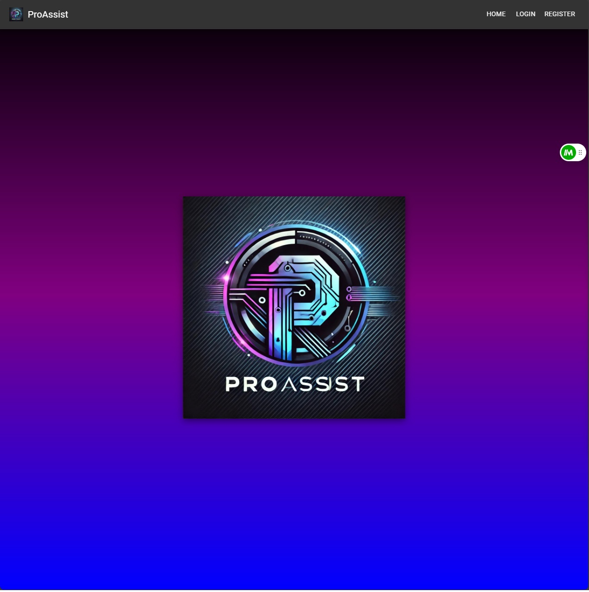
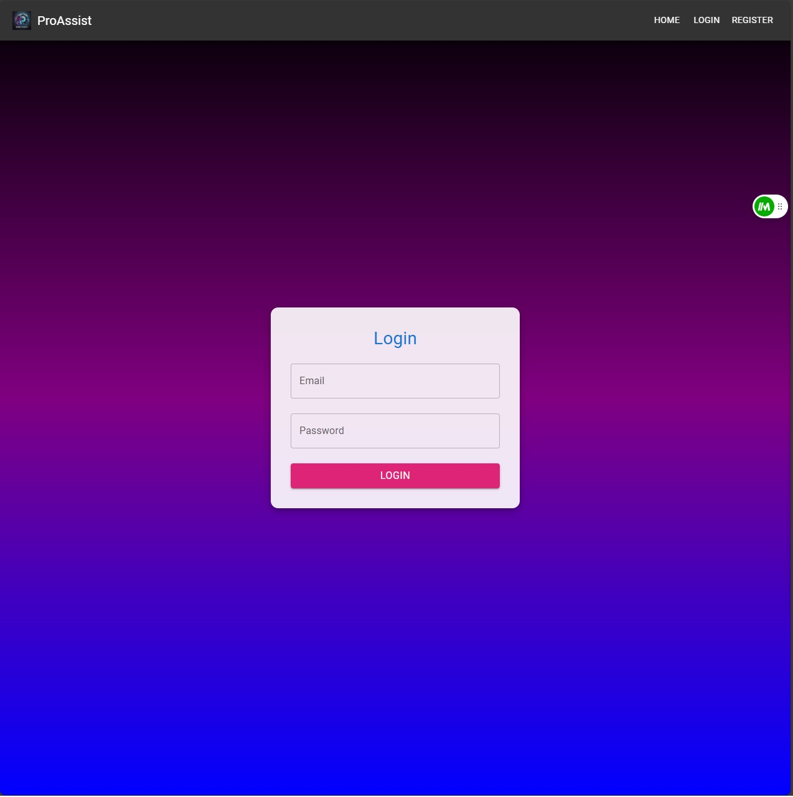
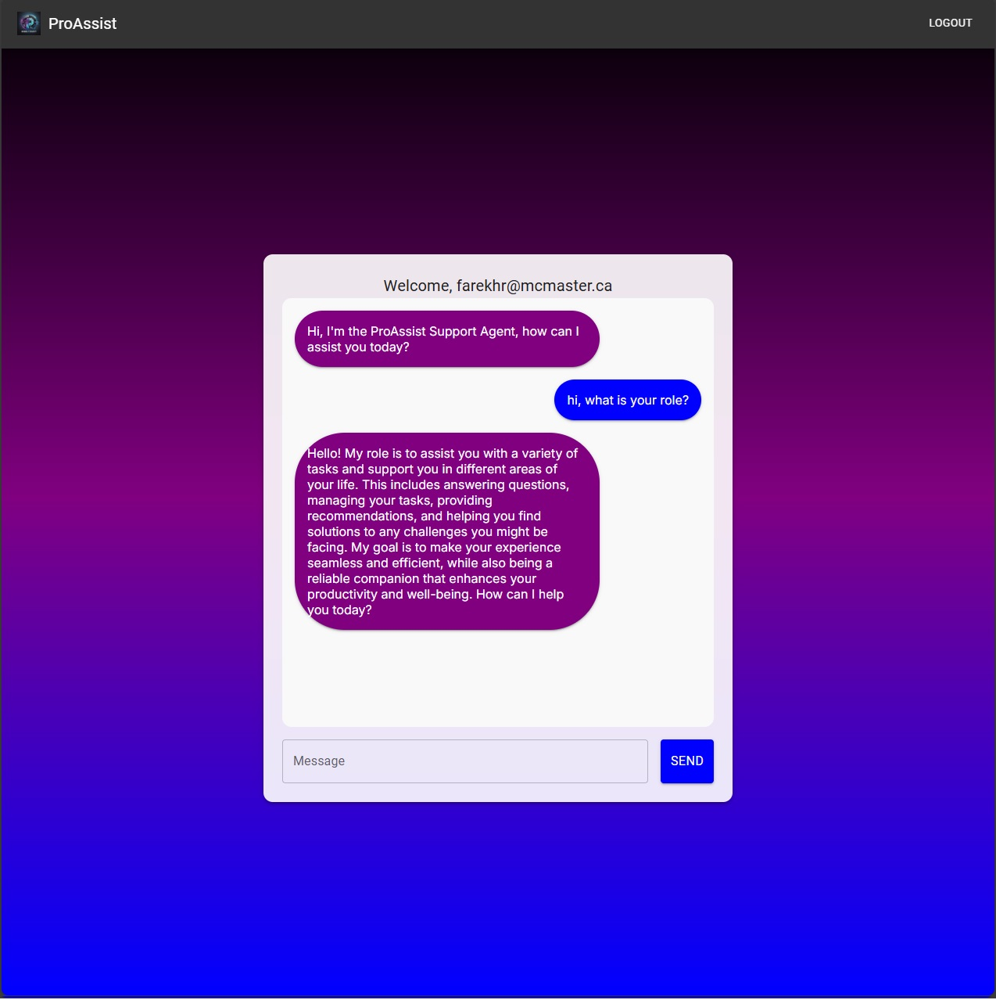

ProAssist AI
Project Overview
Introduction:
- Title: ProAssist AI
- Duration: August 2024
- Role: Full Stack Developer
- Team: Ryan (me), Kirit (Full Stack Developer)
Summary:
The AI Chatbot Personal Assistant is a customized chatbot designed to provide users with a seamless and interactive experience, leveraging advanced AI capabilities. The application uses state-of-the-art web development technologies to ensure smooth user authentication, real-time communication, and a responsive design.
Features:
User Authentication:
- Secure Login & Registration: Implemented using Firebase Authentication, allowing users to securely register and log in to access personalized chatbot features.
- Password Recovery: Provides functionality for users to recover their accounts in case they forget their passwords.
AI Chatbot Functionality:
- Natural Language Processing (NLP): Utilizes OpenAI's GPT-based models to understand and respond to user queries in a conversational manner.
- Customizable Responses: Allows users to tailor the chatbot's responses to suit their preferences, making the interaction more personalized.
Real-time Communication:
- Instant Messaging: The chatbot provides real-time responses to user queries, creating an interactive and engaging experience.
User Interface:
- Responsive Design: The application is fully responsive, providing an optimal user experience on both desktop and mobile devices.
- Custom Sign-in/Registration Page: A comprehensive dashboard gives users quick access to sign in and register for the application.
Key Decisions and Implementation:
- User Interface: Developed using React.js and Next.js for a clean and dynamic user experience.
- AI Integration: Integrated OpenAI's API to handle complex natural language processing tasks.
- Backend Development: Firebase was utilized for real-time database management and user authentication.
- Version Control: Used Git for version control, ensuring smooth collaboration and code management.
Technologies and Tools:
- Next.js: For server-side rendering and optimizing performance.
- React.js: For building dynamic user interfaces.
- Material-UI: For designing a sleek and intuitive user interface.
- Firebase: Adopted for its robust and scalable backend services, including real-time database and authentication. This allows for efficient data storage, secure user authentication, and instant updates across the application.
- Git: Implemented for version control to track changes and collaborate effectively.
- Vercel: Utilized vercel to host and deploy the website for public use.
Project Achievements
- Enhanced User Engagement: The personalized and responsive chatbot interface has led to high user satisfaction.
- Effective Task Automation: Successfully implemented task automation features that users find practical and easy to use.
Gallery/Visuals
Landing Page:
Login/Register Page:
Chat Interface Page:
- Challenge: Ensuring seamless real-time communication between users and the AI.
- Solution: Leveraged Firebase's real-time database and OpenAI's API to provide instant and accurate responses.
- Challenge: Designing a chatbot interface that is both functional and aesthetically pleasing.
- Solution: Employed Material-UI to create a modern, user-friendly design that enhances the overall user experience.
Future Directions
- Voice Interaction: Adding voice-based interaction capabilities to allow users to communicate with the chatbot via speech.
- Advanced Personalization: Implementing more advanced personalization options, allowing users to adjust the chatbot’s tone, style, and functionality.
- Mobile Application: Developing a mobile app for both iOS and Android, enabling users to access the chatbot on the go.
- Integration with Third-Party Services: Adding integration with third-party services like Google Calendar, Slack, and more to expand the chatbot’s functionality.
Conclusion:
The AI Chatbot Personal Assistant project demonstrates the ability to build an interactive and responsive web application that leverages modern development frameworks and AI technology. The project showcases skills in full-stack development, AI integration, real-time data management, and user-centric design. This chatbot offers users a powerful tool for managing daily tasks and interactions, with plenty of potential for future enhancements.
Source Code
View on GitHubTry It Out Yourself!
Link to Project